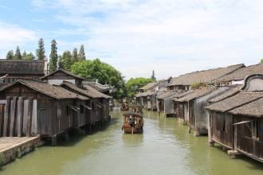

东栅区，2001年，乌镇保护开发东栅工程 东栅景区正式对外开放，一期景区面积约0.46平方公里，保护建筑面积近6万平方米，是中国著名的古镇旅游胜地。景区游程达2公里，由东栅老街、观前街、 河边水阁、廊棚组成，工程全部完工后，东栅景区占地面积约为0.9平方公里，设有十多个景点。
西栅景区，西栅位于乌镇西大街，毗邻古老的京杭大运河，并有公路直通江苏、苏州和桐乡市区，交通十分便利，与东栅以旅游观光为主题不同，西栅打造的是商务旅游、 休闲度假为主。西栅景区占地3.4平方公里，纵横交叉河道9000多米，需坐渡船出入，有古桥72座，河道密度和石桥数均为全国古镇之最，景区内保存有精 美的明清建筑25万平方米，横贯景区东西的西栅老街长度达1.8公里，两岸临河水阁绵延1.8公里余。景区北部区域则是五万多平方米的天然湿地。
江南百床馆， 江南百床馆，是中国第一家专门收藏、展出江南古床的博物馆，坐落在乌镇东大街210号，又称赵家厅，面积约1200多平方米，内收数十张明、清、近代的江 南古床精品。馆内第一展厅陈列的有：明·马蹄足大笔管式架子床等，采用木架构造形式，强调家具形体的线条形象；第二展厅的有清·拔步千工床等床，用料为黄 杨木，长217公分，深366公分，高292公分，前后共有三叠，此床历时3年方才雕成，用工千余，故有其名。
江浙分府，江浙分府明代称浙直分署，是乌镇历史上特有的一个政府机关。职掌巡盐捕盗，兼理地方词讼，俗称二府衙门。自明朝嘉靖间设立，至民国初撤销，几经革复，数易其址，历时三百七十余年。
江南民俗馆，展示了晚清至民国时期乌镇民间有关寿庆礼仪、 婚育习俗和岁时节令等民俗。蜡像塑出婚丧嫁娶的话剧。衣俗厅以实物、蜡像、照片等不同手段展示百余年前江南民间穿着习俗。节俗厅通过一年不同节气中乌镇人 不同的生活习俗，比如春节拜年、元宵走桥、清明香市、立夏秤人、端午吃粽、水龙大会、天贶晒虫、中元河灯、中秋赏月、重阳登高、冬至祭祖等，展示江南水 乡。婚俗厅以喜堂拜堂为中心，通过新人、媒婆、父母等人物以及花轿、嫁妆等实物展示婚庆的热闹场景。寿俗厅以老人祝寿为主题，通过厅堂的吉庆实景和字画、 寿幛、寿桃、寿面等特有的做寿物品。
江南木雕陈列馆， 这里原是东栅徐家的豪宅，又名百花厅，以其木雕精美而闻名。的正室偏屋内更陈列了丰富的中国古代木雕精品器件。木雕馆里的木雕取材丰富，有“八仙过海”、 “郭子仪祝寿”等民间传说，有“打渔”、“斗蟋蟀”、“敲锣打鼓”等生活场景，也有“龙凤呈祥”、“松鼠吃葡萄”、“梅兰竹菊”等传统图样，刻画出具有江 南地方特色的民俗风情。
余榴梁钱币馆，余榴梁， 土生土长的乌镇人，钱币收藏大家，著有《中国花钱》、《中国鉴赏与收藏》、《钱币》、《钱币漫谈》、《钱币学钢要》、《世界流通铸币》等十多部学术专著。 他苦心集藏四十年，拥有世界上230多个国家和地区的历代钱币近26000余种，其中有金属流通货币、纸币、花钱等，材质有金、银、铜、铁、锡、铝、铅、 锑、陶、镍、纸、竹、骨、琉璃、塑料等15种，上起夏商，下至现代。
文昌阁，立志书院门前河埠上有一幢楼阁，名文昌阁。书院与阁之间，仅隔一条不宽的观前街。旧时读书人到文昌阁，一般都有下人陪同乘坐小船前来。小船就泊在阁下的河埠边，读书人上楼，下人就在过道两旁的长凳上坐着等候。
修真观， 修真观在乌镇中市。北宋咸平元年（998年），道士张洞明在此结庐，修真得道，乃创建“修真观”。修真观与苏州玄妙观、濮院翔云观并称江南三大道观，地位 极为崇高。修真观共设三进，一进为山门，二进是东岳大殿，三进为玉皇阁；两边分设十殿阎王、瘟元帅、财神等配殿；山门前的广场也依旧开阔宏畅。修真观的山 门正门上方挂有一特大算盘，下方书对联一副：人有千算，天则一算，极具警世意味。
茅盾故居，茅盾故居是嘉兴市迄今唯一的中国全国重点文物保护单位，坐落在乌镇市河东侧的观前街17号，四开间两进，层木结构楼房，坐北朝南，总面积约450平方米。故居分东西两个单元，是茅盾的曾祖父分两次购买。故居包括卧室、书房、餐厅等建筑，其家具与布置仍是茅盾当初居住时的样子
古戏台，修真观戏 台是道观的附属建筑，建于清乾隆十四年（1749），与修真观一样屡遭毁损，但1919年的那次修缮后，便一直保持到今天。戏台占地204平方米，北隔观 前街与修真观相对，南临东市河，东倚兴华桥。戏台为歇山式屋顶。台为两层，底层用砖石围砌，进出有边门和前门。边门通河埠，底层后部有小梯通楼台，亦可通 过翻板门从河埠下到船里。楼台分前后两部分，后部是化妆室；前部是戏台，正对广场。
汇源当铺
在应家桥和南花桥之间，五开间的门面，楼上楼下，1.8米高的柜台。据《乌青镇志》记载，乌镇典当行最多时达13家，到了1931年，只有汇源当1家还支 撑。当铺四周有高墙围护，靠外墙脚均用一人头高的条石筑就，使盗贼无法翻墙、掘洞，更有高出屋顶的更楼有人日夜瞭望。大门用不易着火的厚实的银杏木制成， 外包铁皮，内有坚实的门闩、落地闩。进门有关帝堂，以示忠义为本，兼有驱除邪恶的企求。头埭为店厅，是收兑典物的交易场所，除汇源当外都设有高柜台、木栅 栏。当典物者递上衣物后，听凭当里朝奉居高临下吆喝开价，低人一头。后埭是库房，为了防火，埭与埭的舍房各不相连，庭院中放了不少挑满水的七石缸，称之为 “太平缸”。汇源当是徐东号第九世孙徐焕藻（茗香）于道光年间创办的。